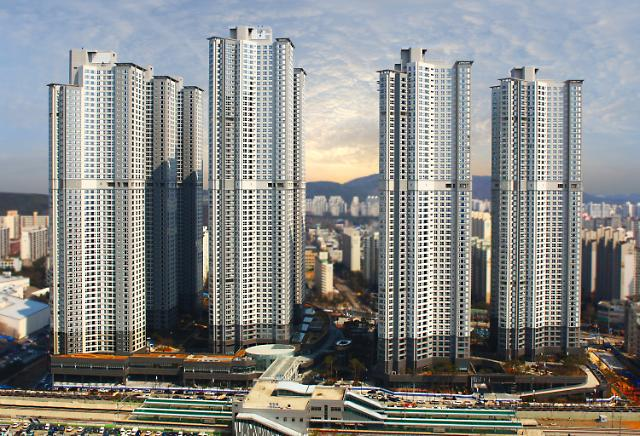

일산두산위브더제니스, 이사 전에 알아둘 기본 정보
세대수부터 주차와 난방까지. 일산두산위브더제니스의 기본 정보를 정리했습니다.

일산두산위브더제니스 전경 · 두산건설 제공 / 아주경제
단지의 규모
일산두산위브더제니스는 2,700세대, 8개 동으로 구성되어 있습니다. 주소는 경기도 고양시 일산서구 일현로 97-11입니다.
주차와 난방
단지 자료상 주차 대수는 4,911대이며, 세대당 1.81대입니다. 난방은 지역난방입니다. 방문 주차와 세대별 관리비는 현재 운영 기준을 따로 확인해야 합니다.
내가 볼 집의 조건
같은 일산두산위브더제니스라도 전용면적, 동, 층과 방향은 매물마다 다릅니다. 단지 평균 정보와 개별 매물의 조건을 구분해 비교해 보세요.
일산두산위브더제니스의 매물을 더 살펴보세요.
매물별 사진과 면적, 가격을 비교할 수 있습니다.
매물 보기리치고 단지 정보 · 네이버 중개소 정보
공개 자료를 바탕으로 작성한 홈페이지 콘텐츠 초안입니다.